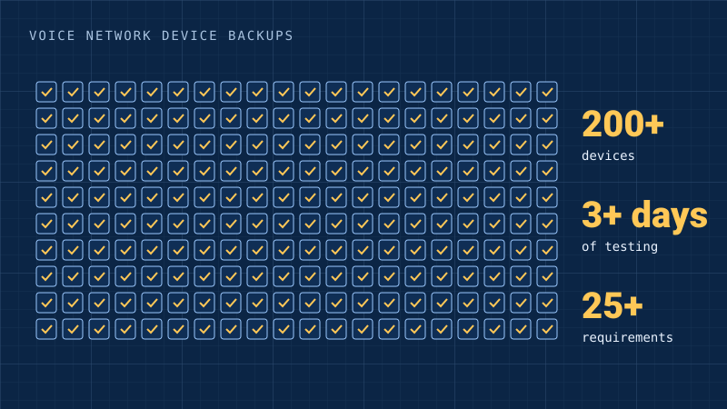

Verizon
Voice network device backups
200+ live voice-network devices had no backups. I automated the fix.
- Internal tool. No public link.

By the numbers
- 200+devices with no backups
- 3+days of testing
- 25+items in the requirements spec
What I did
- Found 200+ live voice-network devices with no backups.
- Automated the backups in Python and tested them for 3+ days.
- Stopped an unsafe rollout after finding a firmware problem.
- Wrote a 25+ item requirements spec and handed the work to operations.